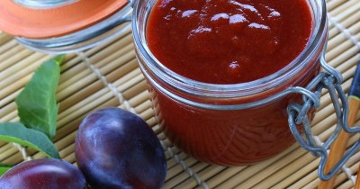

Красный китайский соус

Ингредиенты
- Сливы - 900 гр
- Батат - 80 гр
- Лук репчатый - 80 гр
- Яблочный уксус - 100 мл
- Коричневый сахар - 120 гр
- Соевый соус - 50 мл
- Мёд - 70 гр
- Имбирь - 30 гр
- Чеснок - 2 зубч.
- Морская соль - 10 гр
- Палочка корицы - 1 шт.
- Анис - 2 шт.
- Гвоздика - 4 шт.
- Перец острый молотый - 3 гр.
- Фенхель - 2 гр.
Рецепт приготовления
- Китайскую кухню невозможно представить без красного сливового соуса. Он имеет густую консистенцию, кисло-сладкий вкус и пряный аромат. Служит идеальным дополнением к блюдам из мяса, жареных овощей, гарниров из риса. Красный китайский соус получил популярность по всему миру. В народе его часто называют китайским кетчупом, а также утиным соусом. Это название соус получил из-за идеального сочетания со таким известным блюдом, как утка по-пекински .Однако, использовать его можно не только в азиатской кухне. Соус прекрасно сочетается с блюдами на гриле, и может использоваться в качестве маринада для свинины, говядины или птицы.
- Сначала необходимо подготовить продукты для соуса. Овощи помыть под проточной водой и высушить. Сливы разрезать пополам, удалить косточки. Сладкий картофель почистить и нарезать кубиками. Лук также очистить от кожуры и мелко нашинковать. Свежий имбирь натереть на терке - должно получиться около 2 столовых ложек натертой мякоти. Чеснок очистить и измельчить. Все приготовленные ингредиенты поместить в сотейник или глубокую сковороду, влить туда же яблочный уксус, соевый соус, добавить мед, сахар и соль. На среднем огне довести до кипения. Затем уменьшить огонь и продолжать кипятить еще 30 минут. За это время сливы полностью разварятся. Полученную смесь снять с огня и измельчить до пюреобразного состояния с помощью блендера.
- В отдельной сковороде смешать палочку корицы, анис, гвоздику, добавить острый перец и фенхель. На сухой сковороде (без масла!) нагреть специи до появления характерного аромата. Главное специи не пережарить, иначе они будут горчить и испортят готовый соус. Затем снять с огня и охладить. Переложить охлажденные специи в марлю, завернуть в мешочек и завязать. Мешочек со специями поместить в сотейник со сливовым пюре и на среднем огне прокипятить в течение получаса, пока соус не загустеет до желаемой консистенции. Мешочек со специями вынуть из сотейника и дать соусу остыть. Готовый соус переложить в чистую герметичную емкость. Таким образом соус можно хранить в холодильнике до 2 недель.
- Готовый красный китайский соус подают к мясу, гарнирам или закускам. Особенно хорошо он сочетается с уткой по-пекински и свининой.
- Приятного аппетита!
Вернуться к списку блюд